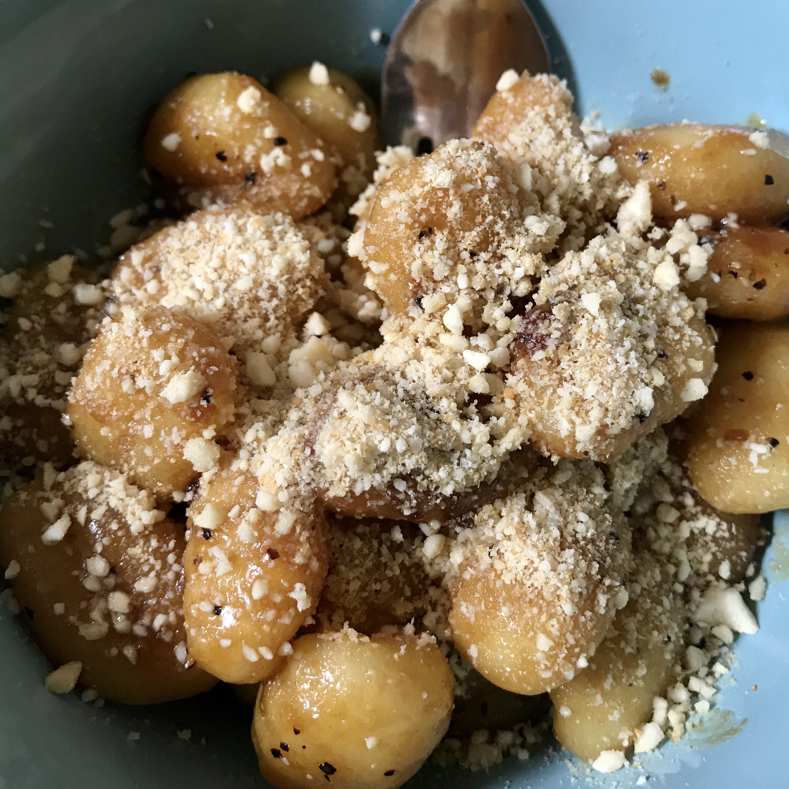
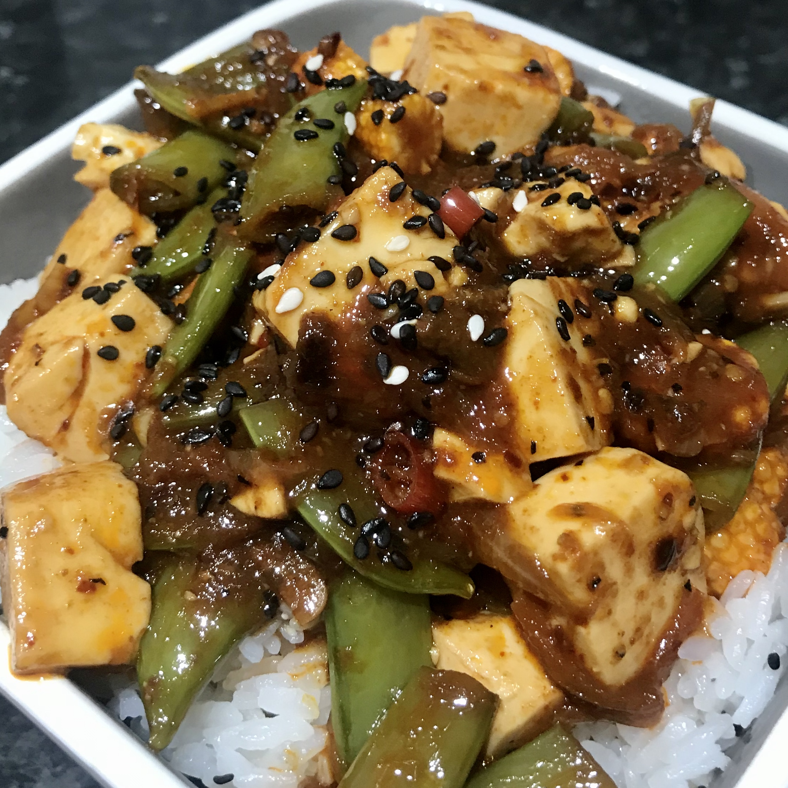

HOME ABOUT BLOG PORTFOLIO CONTACT

I grew up idolising Nigella, always in awe of how confidently she paired bold flavours together. This recipe, adapted from her marmite spaghetti, is no exception.
Gnocchi is cheap and filling, making it a perfect base for inventive sauces such as this one! I chose to top this dish with a vegan parmesan alternative, which adds a nutty, creamy element.

I adore spice, even in the blistering heat we've been enduring in the UK lately. One of my all time favourite spicy dishes is mapo tofu, which I first tried in a 7/11 in Tokyo last August.
Mapo tofu recipes generally utilise 花椒 (sichuan pepper) to create a tongue-numbing sauce; However I had to get inventive with fresh birds eye chillies and korean 고추가루 chilli flakes due to not being able to source sichuan pepper during the lockdown. I think I managed to replicate the flavour profile well, despite the recipe being quite in-authentic.